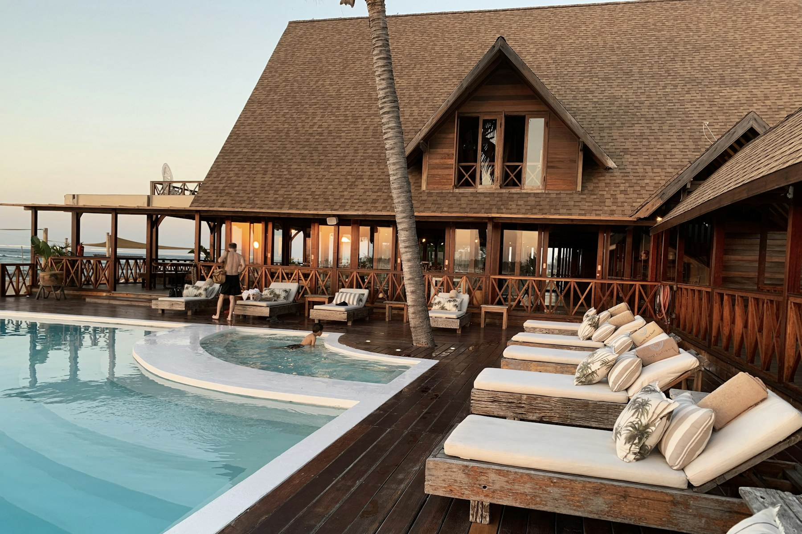

Sua identidade
Nome, cores, fotografias e textos para apresentar sua hospedagem com personalidade.
SITES PARA POUSADAS
Um site que apresenta o cuidado da sua hospedagem, facilita a escolha e abre um caminho direto para falar com você.

Nome, cores, fotografias e textos para apresentar sua hospedagem com personalidade.
Uma vitrine de quartos, serviços e experiências, com as informações fornecidas por você.
Datas, hóspedes e acomodação em uma solicitação organizada. A confirmação depende da sua operação.
Layouts adaptáveis e navegação simples para conhecer, escolher e entrar em contato.
A prévia é um ambiente de teste. Você navega e ajusta antes de enviar o pedido de proposta.
Explorar os modelos